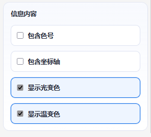

Page 1
网页简介
本网站由 闷香红烧鱼 独立开发，完全免费使用ヾ(≧▽≦*)o
核心功能为快速生成拼豆色卡，也可辅助绘制简易像素画；请注意，它并不具备专业级像素绘图能力 ::>_<::
开发历程
- 2025 年 9 月立项，历时一个月完成 v1.0 并上线内测。
- 随后三周持续维护，发布首个公开版 v1.6。
- 再用三周对功能与体验进行大幅重构与优化，推出全面升级版 v2.0。
- 经过一个月的调试，平板端进入公开测试阶段。
Page 2
Bug 反馈与功能建议
感谢大家的支持与鼓励！v2.0 开发期间，众多功能和 Bug 正是依赖你们的及时反馈才得以快速修正。
后续我会持续维护与迭代。如果在新使用过程中遇到严重 Bug，或有任何改进建议，欢迎通过以下渠道联系：
提示：留言时请尽量描述操作步骤、浏览器版本与报错现象，方便程序员快速定位问题。
Page 1
平板端
可通过 左侧工具栏 -> 全屏和简洁模式开关 -> 改为平板端操作与显示 将绘画操作切换为平板端
切换为平板端后在左侧的工具栏重新打开说明书即可切换为平板端说明书
点击此处可快速切换
平板端说明书
注意：平板端目前处于测试版本，当前使用可能会遇到不可预知的Bug，请谨慎使用，若您遇到Bug请及时汇报(小红书、B站、Github仓库)。
 图：平板端切换演示
图：平板端切换演示
Page 2
基础操作
仅需三步即可生成专属草图
-
创建画布
 图 1：新建画布
图 1：新建画布
-
使用工具绘图
 图 2：绘制图案
图 2：绘制图案
-
导出文件
 图 3-1：导出设置
图 3-1：导出设置
 图 3-2：导出成品
图 3-2：导出成品
Page 1
画布使用
绘画的区域。
- 滚轮滚动：放大 / 缩小画布。
- 长按滚轮：拖动画布。
- 双击滚轮：还原画布至初始位置。
 图：画布手势演示
图：画布手势演示
Page 2
画笔使用
快捷键：1
用于最基础的像素绘制。
 图：画笔绘制与擦除
图：画笔绘制与擦除
Page 3
油漆桶使用
快捷键：2
用于大面积像素填充。
 图：油漆桶填充与擦除
图：油漆桶填充与擦除
Page 4
吸管使用
快捷键：3
用于快速拾取画布已有颜色。
 图：吸管取色
图：吸管取色
Page 5
选区使用
快捷键：4
用于对画布局部区域进行编辑。
- 长按左键：添加选区。
- 双击左键：反选全部。
- 长按右键：减去选区。
- 双击右键：清空全部选区。
- 长按滚轮：拖动已有选区位置。
提示：存在选区时，所有绘制操作仅作用于被选中的像素。
 图：选区添加、减选与拖动
图：选区添加、减选与拖动
Page 6
撤回与回退
撤回：Alt + Z
回退：Alt + X
- 撤回：回退至上一步操作。
- 回退：恢复被撤回的一步操作。
注意：撤回 / 回退历史记录有限，无法无限回溯，请及时保存关键进度。
 图：撤回与回退演示
Page 1
图：撤回与回退演示
Page 1
快捷键操作
以下快捷键仅在画布处于激活状态且未聚焦任何输入框时生效。
| 快捷键 |
功能 |
1 |
切换到画笔工具 |
2 |
切换到油漆桶工具 |
3 |
切换到吸管工具 |
4 |
切换到选区工具 |
Alt + S |
以默认选项快速保存（pixel-canvas-宽x高.png，含色号、坐标轴、默认背景、光效全开） |
Alt + Z |
撤回一步 |
Alt + X |
回退一步 |
Alt + W |
底图编辑模式 开/关 (仅在有底图时生效) |
Alt + A |
全屏模式切换 |
Alt + Q |
简洁模式 开/关 |
Alt + R |
打开 / 关闭“画布设置”面板 |
Alt + T |
打开 / 关闭“底图设置”面板 |
Alt + Y |
参考图窗口 开/关 |
Alt + I |
显示设置面板 开/关 |
Alt + O |
查看更新说明 |
Alt + P |
打开使用手册页面-电脑端 |
Alt + F |
调色板窗口 开/关 |
Alt + G |
图像操作面板 开/关 |
Alt + H |
色卡管理面板 开/关 |
Alt + U |
打开“导出草图”窗口 |
Alt + V |
打开颜色管理窗口 |
Alt + B |
打开颜色高亮窗口 |
Alt + N |
打开本地保存窗口 |
Alt + M |
打开本地读取窗口 |
Page 2
手势操作
画布
- 滚轮滚动：放大 / 缩小画布。
- 长按滚轮：拖动画布。
- 双击滚轮：还原画布至初始位置。
画笔
油漆桶
吸管
选区
- 长按左键：添加选区。
- 双击左键：反选全部。
- 长按右键：减去选区。
- 双击右键：清空全部选区。
- 长按滚轮：拖动已有选区位置。
底图编辑
参考窗口
- 顶部长按左键：拖动窗口。
- 右下角长按左键：改变窗口大小。
导出草图预览窗口
调色板窗口
- 顶部长按左键：拖动窗口。
- 右下角长按左键：改变窗口大小。
Page 3
画布的创建与编辑
快捷键：Alt + R
基础设置
- 宽度 / 高度：画布基础面积。
- 像素比例：画布 1×1 格 = 原图 N×N 像素（N ≥ 5）。
计算公式：N = 原图像素 ÷ 画布比例
 图：新建画布面板
图：新建画布面板
原图 160×160

导入后 16×16（N=10）
建议：N 取整数倍，确保像素边缘对齐。
扩裁画布
路径：新建画布 / 扩裁画布 → 扩裁画布，可在保留绘图的前提下修改画布尺寸。
 图：扩裁画布面板
图：扩裁画布面板
根据图片生成草图
上传的图片仅在本地处理，网页不会保存任何用户上传的图片！
路径：新建画布 / 扩裁画布 → 根据图片生成草图，一键像素化并生成草图。

三步速成
-
导入图片

-
选择色卡

-
生成草图


参数说明
100% 转换比率

50% 转换比率

- 基准线位置：裁剪框定位。
- 裁剪尺寸：可锁定比例。
- 选择色卡：指定生成用色卡。
- 像素比例：同基础设置。
- 抖动仿色设置：让颜色过渡更贴近原图。
| 选项 |
效果说明 |
示意图 |
无抖动 |
无仿色，适合纯像素块 |
 |
FS 抖动 |
基础抖动，颜色更还原 |
 |
蓝噪声抖动 |
高级有序抖动 |
 |
转换完成后，点击下方按钮即可导出成品。
Page 4
底图的设置与编辑
打开底图编辑窗口：Alt + T
切换底图编辑模式：Alt + W (仅在有底图时生效)
基础设置
- 导入底图：将图片作为画布底部参考。
- 移除底图：删除当前底图。
- 进入底图编辑：切换为底图编辑模式手势。
- 底图居中：使底图重置至居中位置。
- 贴合 xx：使底图对指定位置进行对齐。
- 底图模式：设置底图的图层位置。
- 底图缩放：底图大小可在 1 % – 200 % 之间调节。
 图：底图设置面板
图：底图设置面板
操作手势
- 长按左键：拖动底图。
- 滚轮滚动：底图缩放。
Page 6
导出草图
快捷键：Alt + U
导出窗口可自定义色号、坐标系、背景等内容，并支持高亮指定颜色单独输出。
 图：导出按钮
图：导出按钮
 图：导出总面板
图：导出总面板
预览界面
因窗口压缩，预览图模糊属正常现象，不影响最终清晰度。
操作手势
- 长按左键：拖动预览图。
- 滚轮滚动：预览图缩放。
 图：预览操作示意
图：预览操作示意
渲染设置
 图：渲染设置区域
图：渲染设置区域
导出格式
- 支持 PNG / JPG / SVG / PDF / .pd 工程文件。
- 高亮颜色导出时仅限 PNG、JPG。
- .pd 格式用于后续恢复工程再编辑。
 图：格式选择
图：格式选择
背景设置
- 纯色背景：可自定义颜色。
- 透明背景：不可选颜色，直接留空。
 图：背景设置
图：背景设置
信息内容
包含色号
在图中显示每个像素色号
包含坐标轴
渲染坐标轴
亮光色
默认开启，渲染光变后颜色
温感色
默认开启，渲染温变后颜色

图：信息内容开关
高亮颜色导出
- 导出选中颜色：仅高亮当前在颜色面板选中的色号。
- 导出全部高亮颜色：批量生成每张色号单独高亮图，打包为 .zip。
 图：高亮选项
图：高亮选项
 图：批量导出
图：批量导出
 图：高亮颜色预览效果
图：高亮颜色预览效果
Page 8
本地存储
本地保存：Alt + N
本地读取：Alt + M
网页支持部分的本地存储，用于快捷保存和恢复。
注意：本地存储仅适用于短期临时存储，数据可能会因浏览器数据清理或其他原因导致删除，如需长期存储请导出为PD文件防止丢失。
 图：本地读取入口
图：本地读取入口
 图：本地读取入口
图：本地读取入口
自动保存
网页每五分钟会自动保存当前的绘画数据，自动保存成功会在右下角提示或显示距离下次保存倒计时。
图：自动保存提示(显示倒计时)-1分钟为演示
图：自动保存提示(不显示倒计时)
在触发误退出提醒时，也会进行一次自动保存。
 图：退出自动保存
图：退出自动保存
倒计时可在 左侧工具栏 -> 显示设置 -> 自动保存倒计时显示 开关。
 图：倒计时开关
图：倒计时开关
手动保存
通过 左侧工具栏 -> 导出文件或本地保存 -> 保存在本地 打开保存窗口。
点击窗口内对应的存储位置即可保存或覆盖保存，或通过存储位置下方的“删除保存”按钮删除当前存储内容。
注意：第一格为自动保存存储位置，不可手动保存，但可手动删除
 图：手动保存窗口
图：手动保存窗口
本地读取
通过 左侧工具栏 -> 导入文件或本地读取 -> 读取本地存储 打开保读取窗口。
点击窗口内对应的存储位置下方的“读取”按钮读取当前存储内容。
 图：读取窗口
图：读取窗口
Page 10
全屏与简洁模式
全屏：Alt + A
简洁模式：Alt + Q
注意：全屏快捷键请勿快速连按，否则会导致按键失效；若出现此情况，等待 5 秒即可恢复。
- 全屏模式：将工作区域放大至整个屏幕，隐藏浏览器地址栏与系统任务栏，获得最大可视区域。
- 简洁模式：仅保留主要工具栏与画布，隐藏次要面板与装饰元素，界面更干净。
两者可分别开启，互不冲突。
 图：全屏与简洁模式结合
图：全屏与简洁模式结合
Page 11
调色板
快捷键：Alt + F
调色板用于切换绘制颜色，支持常规色与特殊色快速选取。
 图：调色板面板
图：调色板面板
特殊色选择
当色卡包含透明 / 温变 / 光变 / 夜光 / 珠光等特殊色时，可在面板中的
[特殊色] 下拉框中一键筛选。
 图：特殊色筛选示例
图：特殊色筛选示例
窗口操作
- 拖动右下角：改变窗口大小。
- 长按窗口顶部：拖动窗口位置。
 图：调整大小
图：调整大小
 图：拖动位置
图：拖动位置
Page 12
图像操作
快捷键：Alt + G
提供图像翻转、旋转及对称绘制功能，可快速生成对称图案或调整画面方向。
 图：水平 / 垂直翻转 & 90° 旋转
图：水平 / 垂直翻转 & 90° 旋转
 图：对称绘制
图：对称绘制
提示：对称绘制开启后，所有绘制操作将沿设定轴线实时镜像，适合快速制作轴对称图案。
Page 13
色卡管理
快捷键：Alt + H
在此窗口可切换、重置、新增或删除色卡，支持默认色卡与自定义色卡混合使用。
 图：色卡管理面板
图：色卡管理面板
默认色卡
已内置以下主流品牌色卡：
- DMC
- 卡卡家
- 漫漫家
- 盼盼拼豆
- Coco
- MARD
注意：所有颜色数据来源于公开资料或人工比对实物，可能与实际肉眼观感存在差异，请以实物为准！
自定义色卡
- 支持 JSON、CSV 格式导入。
- 可通过网页内置简易编辑器或手动编写配置文件完成色卡制作。
- 详细步骤见 说明书 → 色卡制作。
Page 14
颜色管理
颜色管理窗口：Alt + V
颜色高亮窗口：Alt + B
颜色管理窗口
可临时禁用 / 启用指定色号；被禁止的色号无法在调色盘中使用(已绘制像素不会被清除)
 图：颜色管理面板
图：颜色管理面板
颜色高亮窗口
可将已绘制像素按色号高亮显示，仅用于视觉检查，不影响导出效果。
 图：高亮设置
图：高亮设置
 图：高亮显示效果
图：高亮显示效果
上方的替换颜色可一键将高亮的所有颜色替换为其它颜色。
 图：高亮颜色替换
Page 1
图：高亮颜色替换
Page 1
色卡制作
网站提供专用色卡编辑器，路径：色卡管理 → 制作色卡。
 图：色卡编辑器入口
图：色卡编辑器入口
 图：色卡编辑器界面
图：色卡编辑器界面
颜色规格定义
左上角栏可指定颜色类型、色号及色值。支持以下六种规格：
- 普通色（normal）：单色，RGB 格式。
- 珠光色（pearlescent）：单色，RGBA 格式。
- 光变色（light）：双色渐变，RGBA ×2；仅填写 颜色一 时默认 透明 → 颜色一。
- 温变色（temperature）：双色渐变，RGBA ×2；仅填写 颜色一 时默认 透明 → 颜色一。
- 透明色（transparent）：单色，RGBA 格式。
- 夜光色（glow）：单色，RGBA 格式。
试色画布
右侧画布提供实时试色功能，可切换光效模式以验证特殊色表现。
- 点击已添加颜色或颜色制作栏即可更换画笔色。
- 顶部按钮 使用当前编辑颜色 可快速应用正在编辑的色值；清空画布 重置试色区域。
提示：若底部状态栏提示“无 无活动颜色”，表示当前选中为白色 RGB(255, 255, 255)。
 图：试色画布与光效切换
图：试色画布与光效切换
色卡列表管理
左下角列表展示当前已添加颜色，支持二次编辑或删除。
导入与导出
顶部左侧三个按钮分别对应“导入继续编辑”“导出 JSON”“导出 CSV”。导出前请在弹窗内输入色卡名称。
 图：导入 / 导出按钮组
图：导入 / 导出按钮组
文件格式规范
使用*星号*包裹的内容为自定义输入内容，用[中括号]包裹的内容是固定选择内容，// 双斜线后跟着的内容为注释
如需手动构建色卡，请遵循以下字段约定。
JSON 规范
{
"*色号*": {
"num": "*色号*",
"type": "[normal|pearlescent|light|temperature|transparent|glow]",
"color": "*RGBA/RGB*",
"color1": "*RGBA/RGB*",
"color2": "*RGBA*"
},
"002": {
"num": "002",
"type": "temperature",
"color": "rgb(230, 210, 255)",
"color1": "rgb(230, 210, 255)",
"color2": "rgb(159, 249, 162)"
}
CSV 规范
*色号*, [normal|pearlescent|light|temperature|transparent|glow], *RGBA/RGB*, *RGBA*
002, temperature, rgb(230, 210, 255), rgb(159, 249, 162)